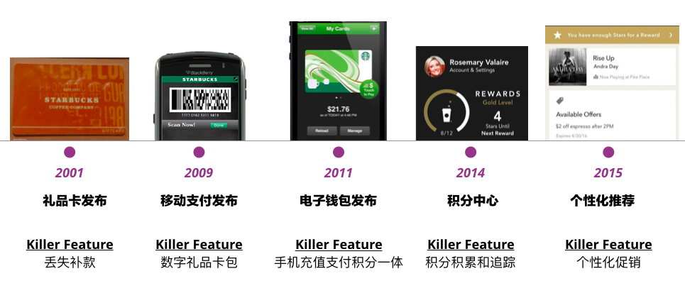
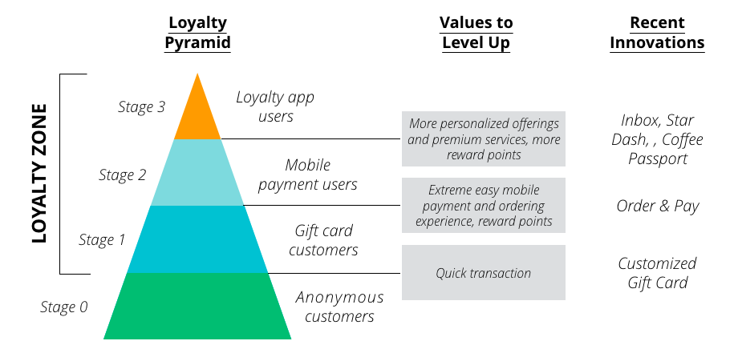
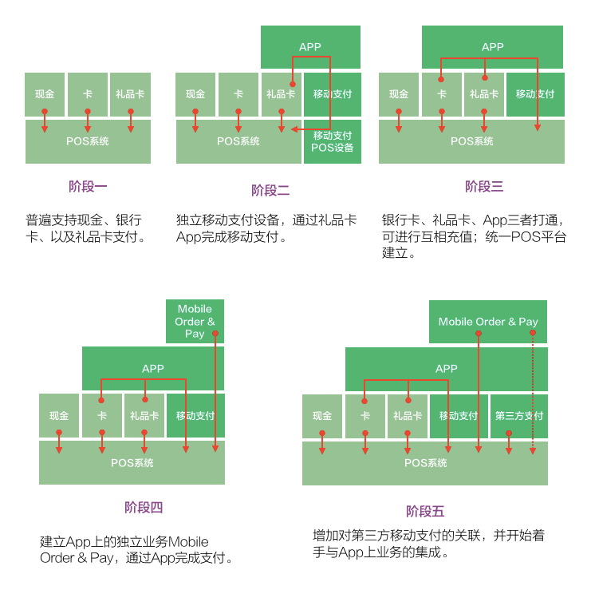
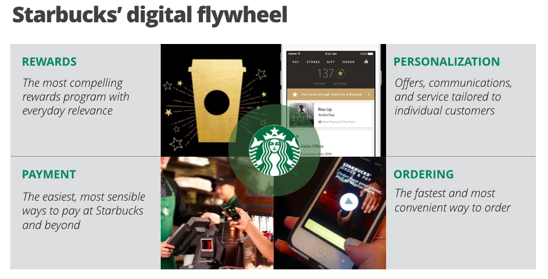

在之前的文章里，我们从时间线和创新类型两个维度将星巴克十五年来的创新逻辑进行了整体的梳理，接下来，我们再将其全部打散，找寻其中的精髓。
寻找简单创新战略原则
在长达十五年的时间里，星巴克所秉持的最核心战略原则（Strategic Principle），是解决「匿名交易（Anonymous Transaction）」的问题。咖啡作为欧美消费者的生活必需品，目前依然存在着大量现金客户，截止2016年9月，非移动支付客户比重依然高达74%（参考）。
作为少数在早期不提供忠诚计划的品牌之一，星巴克意识到，如果大量交易都无法追踪，便无从谈起客户忠诚和个性化客户体验。早期的基础创新都围绕在这个主题上，无论是礼品卡、移动应用、到最近的Mobile Order & Pay。
星巴克坚持这一简单的原则，它们清楚地认识到，要让客户的购买不再匿名，取决于两个要素：1）有价值；2）不麻烦——即客户既要求额外的一步有价值、又不能产生额外的成本。
重点被放在了高频客户身上，他们是星巴克最重要的客户群体，将其产品当作生活的必需品。星巴克的策略是用尽可能降低客户成本的解决方案，一步一步解决这些客户群体眼前最重要的问题，不断提供客户价值。

这些首要问题的解决驱动着公司的创新决策，每一步的背后都暗含那个战略原则的影子，即让星巴克知道客户是谁、在哪里、什么时间、买了什么。
从微观的角度看，星巴克解决问题的方式有时十分巧妙。客户名字被写在纸杯上，而不采用叫号的方式，名字经常拼错，让客户有时觉得尴尬，但也在培养客户「用真名交易」的习惯；有趣的是，那些尴尬告诉店员自己名字的客户现在有了新的手段「手机下单」，反而觉得为他们专属打造。这种生生制造出一种客户价值的方式，让人拍案叫绝。
直到2016年，星巴克才真正把个性化（Personalization）放在重要的位置，而与此同时，大多数的品牌早把个性化变成老生常谈，几乎所有品牌都有自己的积分计划、积分商城，但几乎所有的客户忠诚计划都难以用成功描述。
究其原因，星巴克知道，一切个性化的前提，都离不开客户价值、和获得这些价值的客户成本，一群连基本价值都未曾满足的客户，只会摇头说：「没价值，还麻烦」——自然不会有人「积分上万千辛万苦换个杯子」。
以客户为中心的忠诚模型
在持续解决高频客户问题的同时，星巴克认识到构建一个忠诚行为模型的意义，其作为一个大众品牌，其目标并非极致打造一个小众、高忠诚、高购买的品牌。
传统意义上我们理解客户忠诚行为模型，往往是以品牌为中心的，即客户在不同忠诚度上会对品牌做什么，例如，高忠诚的客户会定期到访，进行高购买行为；低忠诚的客户随机到访，购买力弱。而更好的定义忠诚行为模型的方式，是以客户需求作为中心。
随机到访的客户，和每月到访15次的客户对于支付体验的期待是不同的，后者则希望更快和方便的支付，他们的客户需求不同；而当快捷支付的问题被很好解决，对积分的需求就会逐渐产生。
转化思路之后，创新真正围绕在客户需求上，与传统以品牌为中心的忠诚模型的最大区别是：
| 品牌为中心 | 以客户对品牌的忠诚行为作为判断标准 |
| 客户需求为中心 | 以客户与品牌互动中产生的需求作为判断标准 |
前者的逻辑是「只要你做这些（行为），我就给你那些（奖励）」；后者的逻辑则是「你遇到了这些（问题），我就用着那些（价值）为你解决」。
同时，星巴克在不同层次上强化客户的自我认识，而不急于让客户进行升级，保留低忠诚客户。这样创新变成了两个方向上的持续活动：
| 横向演进 | 不断演进对一个客户需求的方案、尝试新的方案、降低客户的成本； |
| 纵向升级 | 不断挑战更高层次的客户需求。 |
下图展示了星巴克客户需求为中心的忠诚模型，一方面提供更多价值满足不同级别客户的需要；另一方面给予客户充分的选择权进入下一个层次。

而大多数企业在规划数字忠诚体验时，都只把其等同于「奖励平台」，而不在于「持续解决客户的问题」。
移动支付并非一次性技术解决方案
我们经常在CIO的未来项目计划中看到「移动支付（Mobile Payment）」，很多人将移动支付看作是一整套独立且成熟的技术解决方案，但事实上，移动支付本身设计到业务流程、服务体验、底层数据、移动客户端、客户信赖度等诸多方面，而绝不简单时一个实施方案。
回顾星巴克移动支付成功时我们发现其成功要素：将近10年礼品卡业务的积累。换言之，在移动支付落地之前的近十年时间，已经有大量消费者使用礼品卡解决移动支付尝试解决的同样问题——快速支付。在这个背景下，消费者既有快速支付的意愿，也有快速支付的行为。
移动支付对现有支付行为有极大的补充，同时，移动支付也与移动应用的演进息息相关——移动支付的相关方案（支付网关和支付设备）应符合当前移动应用的演变。下面图中展示的，是移动应用与移动支付在15年间到今天的演变。

从图中我们可以看出，如果没有第三阶段移动应用彻底将银行卡支付、礼品卡支付、移动支付彻底打通，就难以有Mobile Order & Pay的成功，而没有后者的成功，也难有各种个性化推荐的成功。
在未来，还将有更多基于移动应用的业务模式产生、更多的第三方支付方式、更多礼品卡玩法产生，这对于现有的支付基础设施（App体验、支付协议、POS系统集成）都产生了新的需求。
那么，移动支付基础设施的投入就从未停止。反观业界，许多企业还在讨论移动支付是否需要投入，他们乐观地认为，移动支付技术成熟，只要一旦决定投入，就可获成功，殊不知，移动支付的复杂度远不是一个技术解决方案可以比拟，它需要长期的投入和演进。
写在最后
在这个系列里，我们全面回顾了星巴克数字忠诚15年来的历程，目前，星巴克将数字忠诚推高到一个全新的高度，在2016年投资者大会上，星巴克推出「Digital Flywheel」战略（参考），其中，将未来消费者体验的核心放在，奖励（Rewards）、定制化（Personalization）、支付（payment）、订购（Ordering），而Flywheel的概念意味着这四个核心概念将在未来产生更有趣的化学作用。

十五年的努力到今天，星巴克用最简单的创新原则、持续解决客户最高优先级的问题、依此建立基于客户价值的忠诚体系、不断创新和演进服务与产品、并深知技术不是一次性投入。它的成功值得所有期待在传统领域进行数字转型的企业学习。